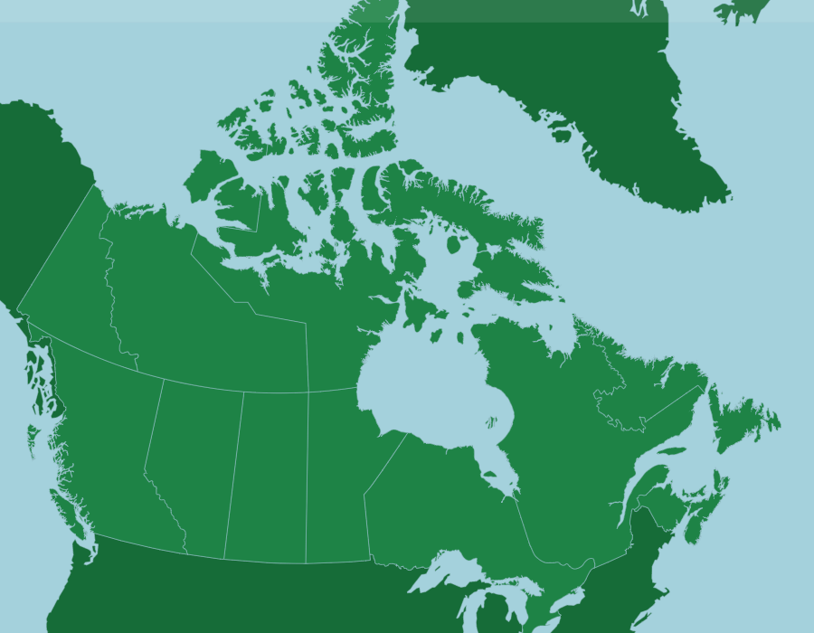

Creating functional diversity maps
Clément Hardy, PhD student in biology
Supervized by Élise Filotas et Christian Messier
ON THE MENU TODAY
| Species | Max height | Leaf size | Fire tolerance |
|---|---|---|---|
| Ab. bal. | 25 | 1 | 1 |
| Tsu. Can. | 30 | 1 | 1 |
| ... | ... | ... | ... |
Paquette and Messier (2011) and other sources :
Average maximum height, Growth rate, Leaf size, Wood density, Wood decay resistance, Vegetative reproduction, Seed mass, Abiotic pollination, Biotic pollination, Shade tolerance, Drought tolerance, Waterlogging tolerance, Arbuscular mycorrhiza (Endomycorrhiza ), Ectomycorrhiza, Leaf longevity, Leaf mass per area, Nitrogen content per leaf mass unit, Post-fire regen, Sexual maturity age, Fire tolerance, Maximal seed dispersal distance.
Average maximum height, Growth rate, Leaf size, Wood density, Wood decay resistance, Vegetative reproduction, Seed mass, Abiotic pollination, Biotic pollination, Shade tolerance, Drought tolerance, Waterlogging tolerance, Arbuscular mycorrhiza (Endomycorrhiza ), Ectomycorrhiza, Leaf longevity, Leaf mass per area, Nitrogen content per leaf mass unit, Post-fire regen, Sexual maturity age, Fire tolerance, Maximal seed dispersal distance.
Selection with Aubin et al. (2016) : resilience to fire, to drought, dispersal.
⚠
Inter-specific variability = trait average for the species

Averaged for North America
| Assemblage (pixel) | Ab. bal. biomass | Tsu. Can. biomass |
|---|---|---|
| 1 | 456 | 0 |
| 2 | 321 | 123 |
| ... | ... | ... |
< 75% of forest pixels
= not forest
= not forest
Loading everything in the right format
head(trait_matrix) # First lines of the trait matrix
maxH GR LS WD WDR Veg SeM Pa Pb TolS TolD TolW AM EM LL LMA Nmass
ABIE.BAL 25 1 1 0.34 1 1 2.1517622 yes no 5.0 1.0 2.0 not possible possible 4.700480 151.00 1.660000
ACER.RUB 25 3 3 0.49 1 1 3.0445224 yes yes 3.4 1.8 3.1 possible not possible 1.716796 71.09 1.913838
ACER.SAH 35 1 3 0.56 1 1 4.1896547 yes yes 4.8 2.3 1.1 possible not possible 1.704748 70.63 1.831675
BETU.ALL 25 3 2 0.55 1 1 0.7030975 yes no 3.2 3.0 2.0 not possible possible 1.704748 46.08 2.200000
BETU.PAP 25 3 2 0.48 1 1 0.2851789 yes no 1.5 2.0 1.3 not possible possible 1.280934 77.88 2.310000
FAGU.GRA 25 1 2 0.56 1 2 5.6594822 yes no 4.8 1.5 1.5 not possible possible 1.609438 61.22 2.040000
head(trait_matrix_cat) # First lines of the trait caracteristics matrix
trait_name trait_type trait_weight
1 maxH Q 1
2 GR O 1
3 LS O 1
4 WD Q 1
5 WDR O 1
6 Veg O 1
assemblageMatrix[sample(nrow(assemblageMatrix), 5), ] # Random lines from assemblage matrix
ABIE.BAL ACER.RUB ACER.SAH BETU.ALL BETU.PAP FAGU.GRA LARI.LAR PICE.GLA PICE.MAR PICE.RUB PINU.BAN PINU.RES PINU.STR
6221 1586753 520612 230650 107645 391287 0 42470 415233 1052705 0 438396 0 38784
3457 938507 106647 0 0 554809 0 31317 572673 1372830 103057 1384604 0 0
8355 0 0 0 0 0 0 0 0 0 0 0 0 0
631 344505 0 0 0 162236 0 13810 27423 2280018 0 756264 0 0
7113 1206778 454670 412523 238762 374573 80227 9935 636612 573199 1662082 35090 11988 24756
Calculating species distances
mFD::funct.dist(
sp_tr = trait_matrix,
tr_cat = trait_matrix_cat,
metric = "gower", # On utilise les distance de gower car on a des traits non continus
scale_euclid = "scale_center",
ordinal_var = "classic",
weight_type = "user", # On utilise les poids définis par notre tableau de carac des traits
stop_if_NA = TRUE)
ABIE.BAL ACER.RUB ACER.SAH BETU.ALL BETU.PAP FAGU.GRA LARI.LAR PICE.GLA PICE.MAR PICE.RUB PINU.BAN
ACER.RUB 0.4697516
ACER.SAH 0.4377433 0.2075869
BETU.ALL 0.3612115 0.2539838 0.3050017
BETU.PAP 0.4239350 0.3028323 0.3947954 0.1576505
FAGU.GRA 0.2846232 0.4173136 0.3040228 0.2577247 0.2939224
LARI.LAR 0.3283239 0.3714178 0.4993606 0.2640120 0.3036585 0.3633346
PICE.GLA 0.1848600 0.5270425 0.4493687 0.4172546 0.4765593 0.3922787 0.3426827
PICE.MAR 0.2299780 0.4914855 0.4705883 0.4094442 0.4721676 0.3858443 0.4072472 0.1816143
PICE.RUB 0.1496464 0.5068574 0.5192935 0.3634241 0.4432416 0.3913854 0.2751769 0.1094079 0.2063126
PINU.BAN 0.4007496 0.4515138 0.5174297 0.3603703 0.3589912 0.5137603 0.2922069 0.2467839 0.2618282 0.2857470
PINU.RES 0.3384460 0.4791053 0.5039957 0.3551556 0.4050585 0.4474870 0.2500878 0.1704184 0.3176755 0.2039425 0.1633759
PINU.STR 0.3223904 0.4173378 0.4576127 0.3667340 0.3850130 0.4272641 0.2241878 0.2430380 0.3899036 0.2795825 0.2383699
POPU.TRE 0.4316025 0.2529703 0.3761910 0.2200811 0.1044399 0.3612765 0.3538639 0.4642024 0.4511698 0.4616915 0.3637941
QUER.RUB 0.4971892 0.3347671 0.2930824 0.2582421 0.2809227 0.2989472 0.4254766 0.4707787 0.5120855 0.5082249 0.4537988
THUJ.SPP.ALL 0.3145076 0.5284897 0.4883007 0.4749568 0.5371919 0.4138132 0.3929694 0.3020578 0.2961858 0.3185660 0.4105402
TSUG.CAN 0.1687720 0.5269340 0.4145838 0.3999275 0.4489758 0.2968728 0.2924479 0.2116418 0.3098149 0.2046880 0.3519128
Computing functional spaces with PCoA
mFD::quality.fspaces(
sp_dist = distanceBetweenSpeciesWithTraits,
maxdim_pcoa = 10,
deviation_weighting = c("absolute", "squarred"),
fdist_scaling = FALSE,
fdendro = "average")
mFD::quality.fspaces.plot(
fspaces_quality = functionalSpaces,
quality_metric = "mad",
fspaces_plot = axisNames[1:min(c(length(functionalSpaces$quality_fspace[,1]) - 1, 6))],
name_file = NULL,
range_dist = NULL,
range_dev = NULL,
range_qdev = NULL,
gradient_deviation = c(neg = "darkblue", nul = "grey80", pos = "darkred"),
gradient_deviation_quality = c(low = "yellow", high = "red"),
x_lab = "Trait-based distance")
Choosing the best functional space
Computing the indices
⚠ Only for assemblages with
number of species > number of PCoA axis (5)
number of species > number of PCoA axis (5)
measures <- c("fdis", "fric")
alpha_fd_indices <- mFD::alpha.fd.multidim(
sp_faxes_coord = axisCoordinates,
asb_sp_w = assemblagesWithAdequateNumberOfSpcies,
ind_vect = measures,
scaling = TRUE,
check_input = TRUE,
details_returned = FALSE,
verbose = TRUE)
head(alpha_fd_indices$functional_diversity_indices)
sp_richn fdis fric
14 8 0.8114983 0.08193873
15 7 0.6069372 0.01937401
16 8 0.5855955 0.02469629
17 7 0.6764044 0.01937401
18 8 0.7342161 0.08193873
19 9 0.5574832 0.09137770
Species diversity
Functional diversity - For all traits
Functional diversity - Resilience to fire

Functional diversity - Resilience to drought
Functional diversity - Dispersal traits
YOU